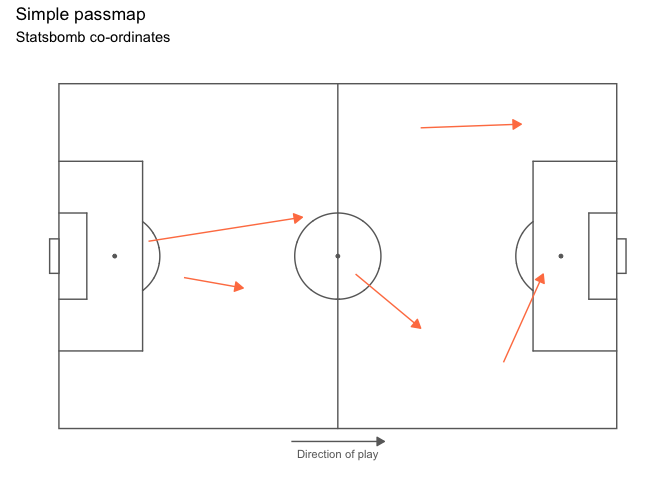

Overview
ggsoccer provides a handful of functions that make it easy to plot soccer event data in R/ggplot2.
Installation
ggsoccer is available via CRAN:
Alternatively, you can download the development version from github like so:
Usage

The following example uses ggsoccer to solve a realistic problem: plotting a set of passes onto a soccer pitch.
pass_data <- data.frame(x = c(24, 18, 64, 78, 53),
y = c(43, 55, 88, 18, 44),
x2 = c(34, 44, 81, 85, 64),
y2 = c(40, 62, 89, 44, 28))
ggplot(pass_data) +
annotate_pitch() +
geom_segment(aes(x = x, y = y, xend = x2, yend = y2),
arrow = arrow(length = unit(0.25, "cm"),
type = "closed")) +
theme_pitch() +
direction_label() +
ggtitle("Simple passmap",
"ggsoccer example")
Because ggsoccer is implemented as ggplot layers, it makes customising a plot very easy. Here is a different example, plotting shots on a green pitch.
Note that by default, ggsoccer will display the whole pitch. To display a subsection of the pitch, simply set the plot limits as you would with any other ggplot2 plot. Here, we use the xlim and ylim arguments to coord_flip.
Because of the way coordinates get flipped, we must also reverse the y-axis to ensure that the orientation remains correct.
NOTE: Ordinarily, we would just do this with scale_y_reverse. However, due to a bug in ggplot2, this results in certain elements of the pitch (center and penalty box arcs) failing to render. Instead, we can flip the y coordinates manually (100 - y in this case).
shots <- data.frame(x = c(90, 85, 82, 78, 83, 74, 94, 91),
y = c(43, 40, 52, 56, 44, 71, 60, 54))
ggplot(shots) +
annotate_pitch(colour = "white",
fill = "chartreuse4",
limits = FALSE) +
geom_point(aes(x = x, y = 100 - y),
colour = "yellow",
size = 4) +
theme_pitch() +
theme(plot.background = element_rect(fill = "chartreuse4"),
title = element_text(colour = "white")) +
coord_flip(xlim = c(49, 101),
ylim = c(-1, 101)) +
ggtitle("Simple shotmap",
"ggsoccer example")
Data providers
ggsoccer defaults to Opta’s 100x100 coordinate system. However, different data providers may use alternative coordinates.
ggsoccer provides support for a few data providers out of the box, as well as an interface for any custom coordinate system:
- Opta
- Statsbomb
- Wyscout
Statsbomb
# ggsoccer enables you to rescale coordinates from one data provider to another, too
to_statsbomb <- rescale_coordinates(from = pitch_opta, to = pitch_statsbomb)
passes_rescaled <- data.frame(x = to_statsbomb$x(pass_data$x),
y = to_statsbomb$y(pass_data$y),
x2 = to_statsbomb$x(pass_data$x2),
y2 = to_statsbomb$y(pass_data$y2))
ggplot(passes_rescaled) +
annotate_pitch(dimensions = pitch_statsbomb) +
geom_segment(aes(x = x, y = y, xend = x2, yend = y2),
colour = "firebrick",
arrow = arrow(length = unit(0.25, "cm"),
type = "closed")) +
theme_pitch() +
direction_label(x_label = 60) +
ggtitle("Simple passmap",
"Statsbomb co-ordinates")
Custom data
To plot data for a dataset not provided, ggsoccer just requires a pitch specification. This is a list containing the required pitch dimensions like so:
pitch_custom <- list(
length = 150,
width = 100,
penalty_box_length = 25,
penalty_box_width = 50,
six_yard_box_length = 8,
six_yard_box_width = 26,
penalty_spot_distance = 16,
goal_width = 12,
origin_x = 0,
origin_y = 0
)
ggplot() +
annotate_pitch(dimensions = pitch_custom) +
theme_pitch()